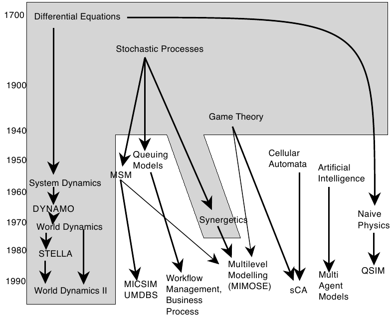

Les systèmes multi-agents : histoire d'émergence spatiale en géographie
Par Etienne Delay
24 février 2017

Un peut de théories
Modélisation, simuler, théoriser
Modéliser
“un modèle est une abstraction qui simplifie le système réel étudié [...], pour se focaliser sur les aspects qui intéressent le modélisateur”
P. Coquillard et D.R.C. Hill 1997
“un modèle a pour fonction d'être un instrument de facilitation d'une médiation”
M.S. Morgan et M. Morrison 1999
Simuler
“La simulation consiste à plonger le modèle dans le temps”
P. Coquillard et D.R.C. Hill 1997
Les simuation servent à explorer le fonctionnement et les propriétés d’un système modélisé ainsi qu’à en étudier son évolution
Prédire ≠ Expliquer
“La théorisation [...] est liée à la possibilité de plonger le réel dans un virtuel imaginaire, doté de propriétés génératives, qui permettent de faire des prévisions”
R. Thom 2009

Un système complexe
Un système est dit complexe si le résultat final n'est pas prédictible directement en connaissant les règles qui le régisse. On parle alors d'émergence!
L'émrgence

E. Daudé, 2004
Besoin d'outils
“L’homme se découvre quand il se mesure avec l’obstacle. Mais, pour l’atteindre, il lui faut un outil. Il lui faut un rabot, ou une charrue. Le paysan, dans son labour, arrache peu à peu quelques secrets à la nature, et la vérité qu’il dégage est universelle.”
Saint-Exupéry (1939, p.9)
Les SMA : définition
Un agent est une entité physique ou virtuelle
- capable d'agir dans un environnement
- mue par un ensemble de tendances (sous forme d'objectifs)
- capable de percevoir (de manière limitée) son environnement
- dont le comportement tend à satisfaire ses objectifs
J. Ferber 1995
crédit photo : Y tambe in wikimedia commons{kind=link}
Les SMA quezako
Sim. numérique : chronologie
Troitzch, 1997
A la croisé des chemins

J.P. Müller (2012)
Les automates cellulaires
Von Neumann, J. et Burks, A. W. (1966)
Des applications ?
- Modèles de ruissellement erosif
- Diffusion des feux de forêts
- Etalement urbain
- etc.
Les Systèmes multi-agents
Les Systèmes multi-agents
Resnick, M. (1994)
Explorations du Modèle ants

Delay et Piou (2014)
Des applications ?
Tout devient possible
- A Psychologically-Motivated Model of Opinion Change with Applications to American Politics
- Agent-Based Model of Flood Risk and Insurance
- Modeling Spatial Contacts for Epidemic Prediction in a Large-Scale Artificial City
- etc.
the place to be : "Journal of Artificial Societies and Social Simulation"
Pourquoi l'approche constructiviste ?
- On connaît les comportements individuels et on veut comprendre le comp. global:
- On connaît le comportement global, on cherche une explication à partir des comp. locaux:
- Intelligibilité (agents VS equ.)
- Défi de la complexité: comportements loin de l'équilibre
- Pertinence pour les écosystèmes et les sociosystèmes
L'approche COMMOD?
- posture based on a cycling approach
- actor are integred in the modeling proscess
- discussion of assumptions and feedbacks
- permanent confrontation of real and model processes to take into account uncertainty

Deux cas concrets
- Acidity GIS
- littoSim
Acidity GIS
Explorer la réponse d'un territoire à différentes payoff de la coopérative pour faire face au changement climatique
Study area 1/2

Study area 2/2
| vineyard surface | 1300ha |
| winegrower | 680 |
| cooperator | 94% |
| Vineyard surface in coop. | 79% |
| Number of coop. | 3 |